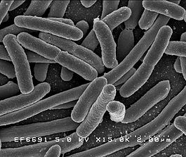

Бакте́рии (эубактерии (лат. Eubacteria), др.-греч. βακτήριον — палочка) — домен (надцарство) прокариотных (безъядерных) микроорганизмов, чаще всего одноклеточных. К настоящему времени описано около десяти тысяч видов бактерий и предполагается, что их существует свыше миллиона, однако само применение понятия вида к бактериям сопряжено с рядом трудностей. Изучением бактерий занимается раздел микробиологии — бактериология.